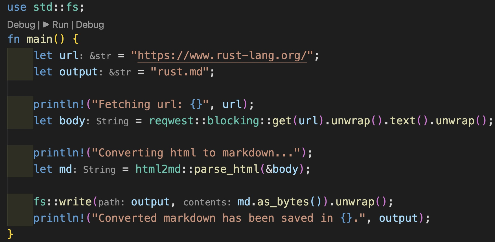
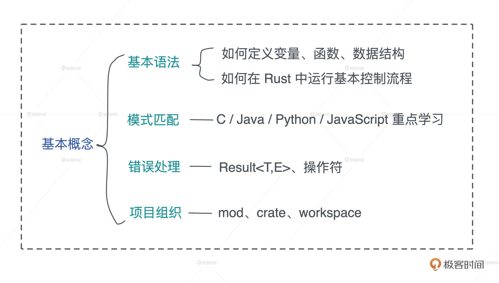
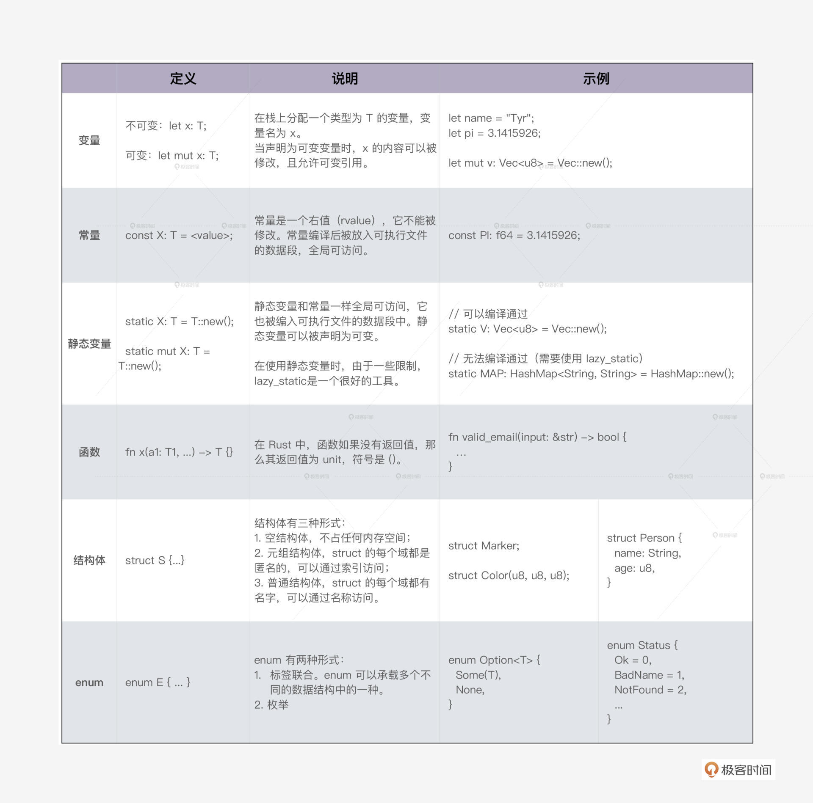
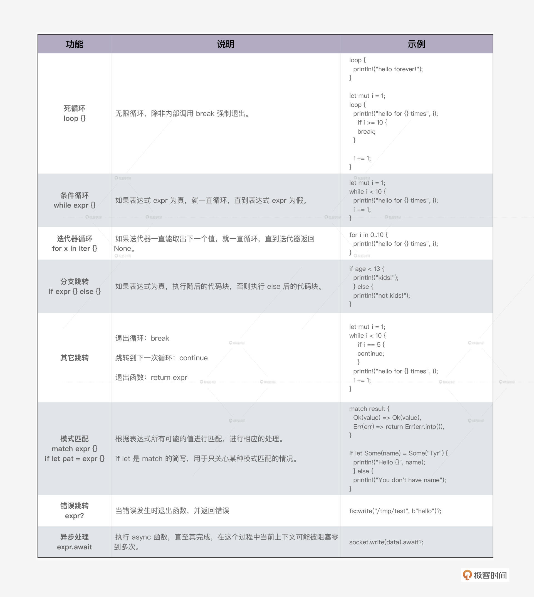
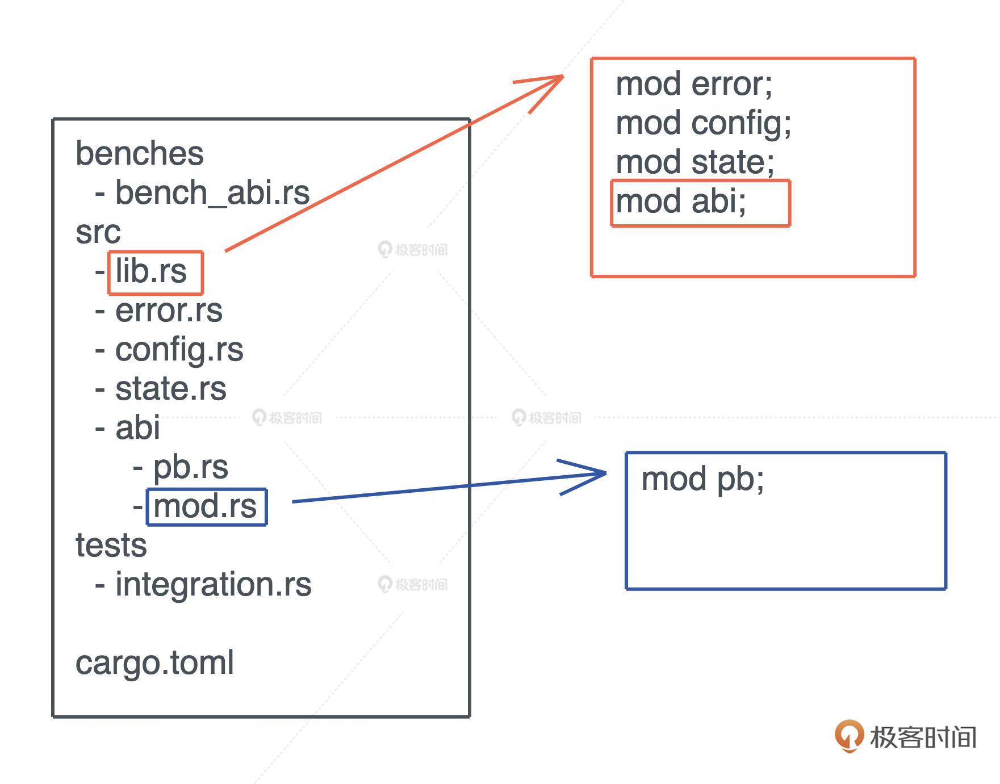
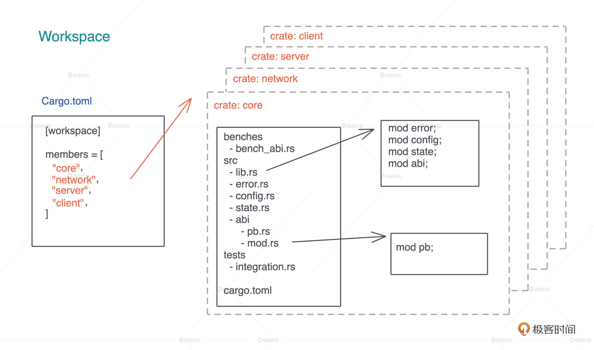
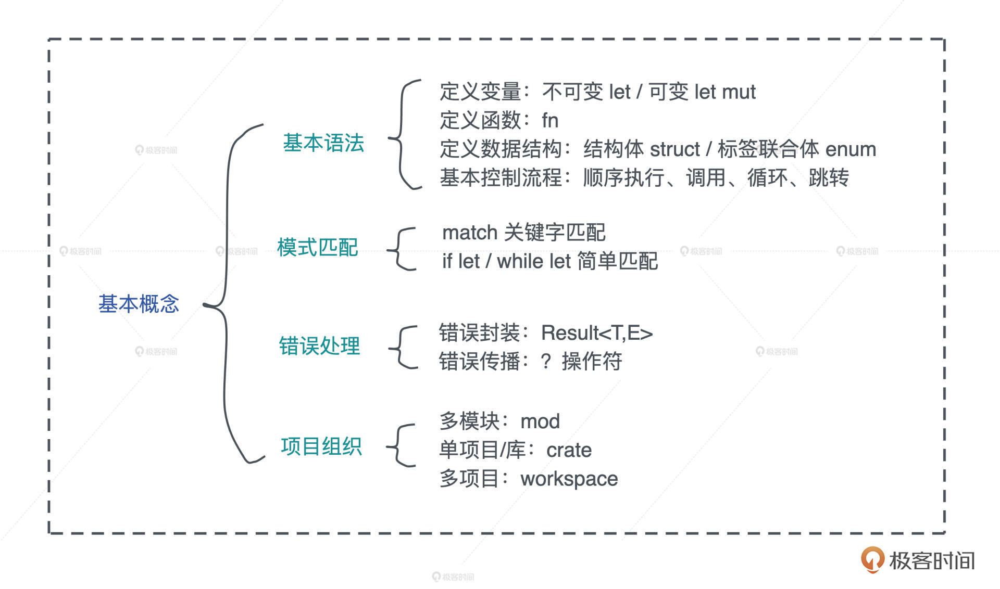

- 00 开篇词 让Rust成为你的下一门主力语言.md
- 01 内存：值放堆上还是放栈上，这是一个问题.md
- 02 串讲：编程开发中，那些你需要掌握的基本概念.md
- 03 初窥门径：从你的第一个Rust程序开始！.md
- 04 get hands dirty：来写个实用的CLI小工具.md
- 05 get hands dirty：做一个图片服务器有多难？.md
- 06 get hands dirty：SQL查询工具怎么一鱼多吃？.md
- 07 所有权：值的生杀大权到底在谁手上？.md
- 08 所有权：值的借用是如何工作的？.md
- 09 所有权：一个值可以有多个所有者么？.md
- 10 生命周期：你创建的值究竟能活多久？.md
- 11 内存管理：从创建到消亡，值都经历了什么？.md
- 12 类型系统：Rust的类型系统有什么特点？.md
- 13 类型系统：如何使用trait来定义接口？.md
- 14 类型系统：有哪些必须掌握的trait？.md
- 15 数据结构：这些浓眉大眼的结构竟然都是智能指针？.md
- 16 数据结构：Vec_T_、&[T]、Box_[T]_ ，你真的了解集合容器么？.md
- 17 数据结构：软件系统核心部件哈希表，内存如何布局？.md
- 18 错误处理：为什么Rust的错误处理与众不同？.md
- 19 闭包：FnOnce、FnMut和Fn，为什么有这么多类型？.md
- 20 4 Steps ：如何更好地阅读Rust源码？.md
- 21 阶段实操（1）：构建一个简单的KV server-基本流程.md
- 22 阶段实操（2）：构建一个简单的KV server-基本流程.md
- 23 类型系统：如何在实战中使用泛型编程？.md
- 24 类型系统：如何在实战中使用trait object？.md
- 25 类型系统：如何围绕trait来设计和架构系统？.md
- 26 阶段实操（3）：构建一个简单的KV server-高级trait技巧.md
- 27 生态系统：有哪些常有的Rust库可以为我所用？.md
- 28 网络开发（上）：如何使用Rust处理网络请求？.md
- 29 网络开发（下）：如何使用Rust处理网络请求？.md
- 30 Unsafe Rust：如何用C++的方式打开Rust？.md
- 31 FFI：Rust如何和你的语言架起沟通桥梁？.md
- 32 实操项目：使用PyO3开发Python3模块.md
- 33 并发处理（上）：从atomics到Channel，Rust都提供了什么工具？.md
- 34 并发处理（下）：从atomics到Channel，Rust都提供了什么工具？.md
- 35 实操项目：如何实现一个基本的MPSC channel？.md
- 36 阶段实操（4）：构建一个简单的KV server-网络处理.md
- 37 阶段实操（5）：构建一个简单的KV server-网络安全.md
- 38 异步处理：Future是什么？它和async_await是什么关系？.md
- 39 异步处理：async_await内部是怎么实现的？.md
- 40 异步处理：如何处理异步IO？.md
- 41 阶段实操（6）：构建一个简单的KV server-异步处理.md
- 42 阶段实操（7）：构建一个简单的KV server-如何做大的重构？.md
- 43 生产环境：真实世界下的一个Rust项目包含哪些要素？.md
- 44 数据处理：应用程序和数据如何打交道？.md
- 45 阶段实操（8）：构建一个简单的KV server-配置_测试_监控_CI_CD.md
- 46 软件架构：如何用Rust架构复杂系统？.md
- 加餐 Rust2021版次问世了！.md
- 加餐 代码即数据：为什么我们需要宏编程能力？.md
- 加餐 宏编程（上）：用最“笨”的方式撰写宏.md
- 加餐 宏编程（下）：用 syn_quote 优雅地构建宏.md
- 加餐 愚昧之巅：你的Rust学习常见问题汇总.md
- 加餐 期中测试：参考实现讲解.md
- 加餐 期中测试：来写一个简单的grep命令行.md
- 加餐 这个专栏你可以怎么学，以及Rust是否值得学？.md
- 大咖助场 开悟之坡（上）：Rust的现状、机遇与挑战.md
- 大咖助场 开悟之坡（下）：Rust的现状、机遇与挑战.md
- 特别策划 学习锦囊（一）：听听课代表们怎么说.md
- 特别策划 学习锦囊（三）：听听课代表们怎么说.md
- 特别策划 学习锦囊（二）：听听课代表们怎么说.md
- 用户故事 绝望之谷：改变从学习开始.md
- 用户故事 语言不仅是工具，还是思维方式.md
- 结束语 永续之原：Rust学习，如何持续精进？.md
03 初窥门径：从你的第一个Rust程序开始！
你好，我是陈天。储备好前置知识之后，今天我们就正式开始 Rust 语言本身的学习。
学语言最好的捷径就是把自己置身于语言的环境中，而且我们程序员讲究 “get hands dirty”，直接从代码开始学能带来最直观的体验。所以从这一讲开始，你就要在电脑上设置好 Rust 环境了。
今天会讲到很多 Rust 的基础知识，我都精心构造了代码案例来帮你理解，非常推荐你自己一行行敲入这些代码，边写边思考为什么这么写，然后在运行时体会执行和输出的过程。如果遇到了问题，你也可以点击每个例子附带的代码链接，在 Rust playground 中运行。
Rust 安装起来非常方便，你可以用 rustup.rs 中给出的方法，根据你的操作系统进行安装。比如在 UNIX 系统下，可以直接运行：
curl --proto '=https' --tlsv1.2 -sSf https://sh.rustup.rs | sh
这会在你的系统上安装 Rust 工具链，之后，你就可以在本地用 cargo new 新建 Rust 项目、尝试 Rust 功能。动起手来，试试用Rust写你的第一个 hello world 程序吧！
fn main() {
println!("Hello world!");
}
你可以使用任何编辑器来撰写 Rust 代码，我个人偏爱 VS Code，因为它免费，功能强大且速度很快。在 VS Code 下我为 Rust 安装了一些插件，下面是我的安装顺序，你可以参考：
- rust-analyzer：它会实时编译和分析你的 Rust 代码，提示代码中的错误，并对类型进行标注。你也可以使用官方的 Rust 插件取代。
- rust syntax：为代码提供语法高亮。
- crates：帮助你分析当前项目的依赖是否是最新的版本。
- better toml：Rust 使用 toml 做项目的配置管理。better toml 可以帮你语法高亮，并展示 toml 文件中的错误。
- rust test lens：可以帮你快速运行某个 Rust 测试。
- Tabnine：基于 AI 的自动补全，可以帮助你更快地撰写代码。
第一个实用的 Rust 程序
现在你已经有工具和环境了，尽管我们目前一行 Rust 语法都还没有介绍，但这不妨碍我们写一个稍稍有用的 Rust 程序，跑一遍之后，你对 Rust 的基本功能、关键语法和生态系统就基本心中有数了，我们再来详细分析。
一定要动起手来，跟着课程节奏一行一行敲，如果碰到不太理解的知识点，不要担心，今天只需要你先把代码运行起来，我们后面会循序渐进学习到各个难点的。
另外，我也建议你用自己常用的编程语言做同样的需求，和 Rust 对比一下，看简洁程度、代码可读性孰优孰劣。
这个程序的需求很简单，通过 HTTP 请求 Rust 官网首页，然后把获得的 HTML 转换成 Markdown 保存起来。我相信用 JavaScript 或者 Python，只要选好相关的依赖，这也就是十多行代码的样子。我们看看用 Rust 怎么处理。
首先，我们用 cargo new scrape_url 生成一个新项目。默认情况下，这条命令会生成一个可执行项目 scrape_url，入口在 src/main.rs。我们在 Cargo.toml 文件里，加入如下的依赖：
[dependencies]
reqwest = { version = "0.11", features = ["blocking"] }
html2md = "0.2"
Cargo.toml 是 Rust 项目的配置管理文件，它符合 toml 的语法。我们为这个项目添加了两个依赖：reqwest 和 html2md。reqwest 是一个 HTTP 客户端，它的使用方式和 Python 下的 request 类似；html2md 顾名思义，把 HTML 文本转换成Markdown。
接下来，在 src/main.rs 里，我们为 main() 函数加入以下代码：
use std::fs;
fn main() {
let url = "https://www.rust-lang.org/";
let output = "rust.md";
println!("Fetching url: {}", url);
let body = reqwest::blocking::get(url).unwrap().text().unwrap();
println!("Converting html to markdown...");
let md = html2md::parse_html(&body);
fs::write(output, md.as_bytes()).unwrap();
println!("Converted markdown has been saved in {}.", output);
}
保存后，在命令行下，进入这个项目的目录，运行 cargo run，在一段略微漫长的编译后，程序开始运行，在命令行下，你会看到如下的输出：
Fetching url: https://www.rust-lang.org/
Converting html to markdown...
Converted markdown has been saved in rust.md.
并且，在当前目录下，一个 rust.md 文件被创建出来了。打开一看，其内容就是 Rust 官网主页的内容。
Bingo！我们第一个 Rust 程序运行成功！
从这段并不长的代码中，我们可以感受到 Rust 的一些基本特点：
首先，Rust 使用名为 cargo 的工具来管理项目，它类似 Node.js 的 npm、Golang 的 go，用来做依赖管理以及开发过程中的任务管理，比如编译、运行、测试、代码格式化等等。
其次，Rust 的整体语法偏 C/C++ 风格。函数体用花括号 {} 包裹，表达式之间用分号 ; 分隔，访问结构体的成员函数或者变量使用点 . 运算符，而访问命名空间（namespace）或者对象的静态函数使用双冒号 :: 运算符。如果要简化对命名空间内部的函数或者数据类型的引用，可以使用 use 关键字，比如 use std::fs。此外，可执行体的入口函数是 main()。
另外，你也很容易看到，Rust 虽然是一门强类型语言，但编译器支持类型推导，这使得写代码时的直观感受和写脚本语言差不多。
很多不习惯类型推导的开发者，觉得这会降低代码的可读性，因为可能需要根据上下文才知道当前变量是什么类型。不过没关系，如果你在编辑器中使用了 rust-analyzer 插件，变量的类型会自动提示出来：

最后，Rust 支持宏编程，很多基础的功能比如 println!() 都被封装成一个宏，便于开发者写出简洁的代码。
这里例子没有展现出来，但 Rust 还具备的其它特点有：
- Rust 的变量默认是不可变的，如果要修改变量的值，需要显式地使用 mut 关键字。
- 除了 let/static/const/fn 等少数语句外，Rust 绝大多数代码都是表达式（expression）。所以 if/while/for/loop 都会返回一个值，函数最后一个表达式就是函数的返回值，这和函数式编程语言一致。
- Rust 支持面向接口编程和泛型编程。
- Rust 有非常丰富的数据类型和强大的标准库。
- Rust 有非常丰富的控制流程，包括模式匹配（pattern match）。
第一个实用的 Rust 程序就运行成功了，不知道你现在是不是有点迟疑，这些我现在都不太懂怎么办，是不是得先去把这些都掌握了才能继续学？不要迟疑，跟着继续学，后面都会讲到。
接下来，为了快速入门 Rust，我们一起梳理 Rust 开发的基本内容。
这部分涉及的知识在各个编程语言中都大同小异，略微枯燥，但是这一讲是我们后续学习的基础，建议你每段示例代码都写一下，运行一下，并且和自己熟悉的语言对比来加深印象。

基本语法和基础数据类型
首先我们看在 Rust 下，我们如何定义变量、函数和数据结构。
变量和函数
前面说到，Rust 支持类型推导，在编译器能够推导类型的情况下，变量类型一般可以省略，但常量（const）和静态变量（static）必须声明类型。
定义变量的时候，根据需要，你可以添加 mut 关键字让变量具备可变性。默认变量不可变是一个很重要的特性，它符合最小权限原则（Principle of Least Privilege），有助于我们写出健壮且正确的代码。当你使用 mut 却没有修改变量，Rust 编译期会友好地报警，提示你移除不必要的 mut。
在Rust 下，函数是一等公民，可以作为参数或者返回值。我们来看一个函数作为参数的例子（代码）：
fn apply(value: i32, f: fn(i32) -> i32) -> i32 {
f(value)
}
fn square(value: i32) -> i32 {
value * value
}
fn cube(value: i32) -> i32 {
value * value * value
}
fn main() {
println!("apply square: {}", apply(2, square));
println!("apply cube: {}", apply(2, cube));
}
这里 fn(i32) -> i32 是 apply 函数第二个参数的类型，它表明接受一个函数作为参数，这个传入的函数必须是：参数只有一个，且类型为 i32，返回值类型也是 i32。
Rust 函数参数的类型和返回值的类型都必须显式定义，如果没有返回值可以省略，返回 unit。函数内部如果提前返回，需要用 return 关键字，否则最后一个表达式就是其返回值。如果最后一个表达式后添加了; 分号，隐含其返回值为 unit。你可以看这个例子（代码）：
fn pi() -> f64 {
3.1415926
}
fn not_pi() {
3.1415926;
}
fn main() {
let is_pi = pi();
let is_unit1 = not_pi();
let is_unit2 = {
pi();
};
println!("is_pi: {:?}, is_unit1: {:?}, is_unit2: {:?}", is_pi, is_unit1, is_unit2);
}
数据结构
了解了函数如何定义后，我们来看看 Rust 下如何定义数据结构。
数据结构是程序的核心组成部分，在对复杂的问题进行建模时，我们就要自定义数据结构。Rust 非常强大，可以用 struct 定义结构体，用 enum 定义标签联合体（tagged union），还可以像 Python 一样随手定义元组（tuple）类型。
比如我们可以这样定义一个聊天服务的数据结构（代码）：
#[derive(Debug)]
enum Gender {
Unspecified = 0,
Female = 1,
Male = 2,
}
#[derive(Debug, Copy, Clone)]
struct UserId(u64);
#[derive(Debug, Copy, Clone)]
struct TopicId(u64);
#[derive(Debug)]
struct User {
id: UserId,
name: String,
gender: Gender,
}
#[derive(Debug)]
struct Topic {
id: TopicId,
name: String,
owner: UserId,
}
// 定义聊天室中可能发生的事件
#[derive(Debug)]
enum Event {
Join((UserId, TopicId)),
Leave((UserId, TopicId)),
Message((UserId, TopicId, String)),
}
fn main() {
let alice = User { id: UserId(1), name: "Alice".into(), gender: Gender::Female };
let bob = User { id: UserId(2), name: "Bob".into(), gender: Gender::Male };
let topic = Topic { id: TopicId(1), name: "rust".into(), owner: UserId(1) };
let event1 = Event::Join((alice.id, topic.id));
let event2 = Event::Join((bob.id, topic.id));
let event3 = Event::Message((alice.id, topic.id, "Hello world!".into()));
println!("event1: {:?}, event2: {:?}, event3: {:?}", event1, event2, event3);
}
简单解释一下：
- Gender：一个枚举类型，在 Rust 下，使用 enum 可以定义类似 C 的枚举类型
- UserId/TopicId ：struct 的特殊形式，称为元组结构体。它的域都是匿名的，可以用索引访问，适用于简单的结构体。
- User/Topic：标准的结构体，可以把任何类型组合在结构体里使用。
- Event：标准的标签联合体，它定义了三种事件：Join、Leave、Message。每种事件都有自己的数据结构。
在定义数据结构的时候，我们一般会加入修饰，为数据结构引入一些额外的行为。在 Rust 里，数据的行为通过 trait 来定义，后续我们会详细介绍 trait，你现在可以暂时认为 trait 定义了数据结构可以实现的接口，类似 Java 中的 interface。
一般我们用 impl 关键字为数据结构实现 trait，但 Rust 贴心地提供了派生宏（derive macro），可以大大简化一些标准接口的定义，比如 #[derive(Debug)] 为数据结构实现了 Debug trait，提供了 debug 能力，这样可以通过 {:?}，用 println! 打印出来。
在定义 UserId/TopicId 时我们还用到了 Copy/Clone 两个派生宏，Clone 让数据结构可以被复制，而 Copy 则让数据结构可以在参数传递的时候自动按字节拷贝。在下一讲所有权中，我会具体讲什么时候需要 Copy。
简单总结一下 Rust 定义变量、函数和数据结构：

控制流程
程序的基本控制流程分为以下几种，我们应该都很熟悉了，重点看如何在 Rust 中运行。
顺序执行就是一行行代码往下执行。在执行的过程中，遇到函数，会发生函数调用**。函数调用**是代码在执行过程中，调用另一个函数，跳入其上下文执行，直到返回。
Rust 的循环和大部分语言都一致，支持死循环 loop、条件循环 while，以及对迭代器的循环 for。循环可以通过 break 提前终止，或者 continue 来跳到下一轮循环。
满足某个条件时会跳转， Rust 支持分支跳转、模式匹配、错误跳转和异步跳转。
- 分支跳转就是我们熟悉的 if/else；
- Rust 的模式匹配可以通过匹配表达式或者值的某部分的内容，来进行分支跳转；
- 在错误跳转中，当调用的函数返回错误时，Rust 会提前终止当前函数的执行，向上一层返回错误。
- 在 Rust 的异步跳转中 ，当 async 函数执行 await 时，程序当前上下文可能被阻塞，执行流程会跳转到另一个异步任务执行，直至 await 不再阻塞。
我们通过斐波那契数列，使用 if 和 loop/while/for 这几种循环，来实现程序的基本控制流程（代码）：
fn fib_loop(n: u8) {
let mut a = 1;
let mut b = 1;
let mut i = 2u8;
loop {
let c = a + b;
a = b;
b = c;
i += 1;
println!("next val is {}", b);
if i >= n {
break;
}
}
}
fn fib_while(n: u8) {
let (mut a, mut b, mut i) = (1, 1, 2);
while i < n {
let c = a + b;
a = b;
b = c;
i += 1;
println!("next val is {}", b);
}
}
fn fib_for(n: u8) {
let (mut a, mut b) = (1, 1);
for _i in 2..n {
let c = a + b;
a = b;
b = c;
println!("next val is {}", b);
}
}
fn main() {
let n = 10;
fib_loop(n);
fib_while(n);
fib_for(n);
}
这里需要指出的是，Rust 的 for 循环可以用于任何实现了 IntoIterator trait 的数据结构。
在执行过程中，IntoIterator 会生成一个迭代器，for 循环不断从迭代器中取值，直到迭代器返回 None 为止。因而，for 循环实际上只是一个语法糖，编译器会将其展开使用 loop 循环对迭代器进行循环访问，直至返回 None。
在 fib_for 函数中，我们还看到 2…n 这样的语法，想必 Python 开发者一眼就能明白这是 Range 操作，2…n 包含 2<= x < n 的所有值。和 Python 一样，在Rust中，你也可以省略 Range 的下标或者上标，比如：
let arr = [1, 2, 3];
assert_eq!(arr[..], [1, 2, 3]);
assert_eq!(arr[0..=1], [1, 2]);
和 Python 不同的是，Range 不支持负数，所以你不能使用 arr[1..-1] 这样的代码。这是因为，Range 的下标上标都是 usize 类型，不能为负数。
下表是 Rust 主要控制流程的一个总结：

模式匹配
Rust 的模式匹配吸取了函数式编程语言的优点，强大优雅且效率很高。它可以用于 struct/enum 中匹配部分或者全部内容，比如上文中我们设计的数据结构 Event，可以这样匹配（代码）：
fn process_event(event: &Event) {
match event {
Event::Join((uid, _tid)) => println!("user {:?} joined", uid),
Event::Leave((uid, tid)) => println!("user {:?} left {:?}", uid, tid),
Event::Message((_, _, msg)) => println!("broadcast: {}", msg),
}
}
从代码中我们可以看到，可以直接对 enum 内层的数据进行匹配并赋值，这比很多只支持简单模式匹配的语言，例如 JavaScript 、Python ，可以省出好几行代码。
除了使用 match 关键字做模式匹配外，我们还可以用 if let/while let 做简单的匹配，如果上面的代码我们只关心 Event::Message，可以这么写（代码）：
fn process_message(event: &Event) {
if let Event::Message((_, _, msg)) = event {
println!("broadcast: {}", msg);
}
}
Rust 的模式匹配是一个很重要的语言特性，被广泛应用在状态机处理、消息处理和错误处理中，如果你之前使用的语言是 C/Java/Python/JavaScript ，没有强大的模式匹配支持，要好好练习这一块。
错误处理
Rust 没有沿用 C++/Java 等诸多前辈使用的异常处理方式，而是借鉴 Haskell，把错误封装在 Result<T, E> 类型中，同时提供了 ? 操作符来传播错误，方便开发。Result<T, E> 类型是一个泛型数据结构，T 代表成功执行返回的结果类型，E 代表错误类型。
今天开始的 scrape_url 项目，其实里面很多调用已经使用了 Result<T, E> 类型，这里我再展示一下代码，不过我们使用了 unwrap() 方法，只关心成功返回的结果，如果出错，整个程序会终止。
use std::fs;
fn main() {
let url = "https://www.rust-lang.org/";
let output = "rust.md";
println!("Fetching url: {}", url);
let body = reqwest::blocking::get(url).unwrap().text().unwrap();
println!("Converting html to markdown...");
let md = html2md::parse_html(&body);
fs::write(output, md.as_bytes()).unwrap();
println!("Converted markdown has been saved in {}.", output);
}
如果想让错误传播，可以把所有的 unwrap() 换成 ? 操作符，并让 main() 函数返回一个 Result<T, E>，如下所示：
use std::fs;
// main 函数现在返回一个 Result
fn main() -> Result<(), Box<dyn std::error::Error>> {
let url = "https://www.rust-lang.org/";
let output = "rust.md";
println!("Fetching url: {}", url);
let body = reqwest::blocking::get(url)?.text()?;
println!("Converting html to markdown...");
let md = html2md::parse_html(&body);
fs::write(output, md.as_bytes())?;
println!("Converted markdown has been saved in {}.", output);
Ok(())
}
关于错误处理我们先讲这么多，之后我们会单开一讲，对比其他语言，来详细学习 Rust 的错误处理。
Rust 项目的组织
当 Rust 代码规模越来越大时，我们就无法用单一文件承载代码了，需要多个文件甚至多个目录协同工作，这时我们可以用 mod 来组织代码。
具体做法是：在项目的入口文件 lib.rs/main.rs 里，用 mod 来声明要加载的其它代码文件。如果模块内容比较多，可以放在一个目录下，在该目录下放一个 mod.rs 引入该模块的其它文件。这个文件，和 Python 的 __init__.py 有异曲同工之妙。这样处理之后，就可以用 mod + 目录名引入这个模块了，如下图所示：

在 Rust 里，一个项目也被称为一个 crate。crate 可以是可执行项目，也可以是一个库，我们可以用 cargo new <name> -- lib 来创建一个库。当 crate 里的代码改变时，这个 crate 需要被重新编译。
在一个 crate 下，除了项目的源代码，单元测试和集成测试的代码也会放在 crate 里。
Rust 的单元测试一般放在和被测代码相同的文件中，使用条件编译 #[cfg(test)] 来确保测试代码只在测试环境下编译。以下是一个单元测试的例子：
#[cfg(test)]
mod tests {
#[test]
fn it_works() {
assert_eq!(2 + 2, 4);
}
}
集成测试一般放在 tests 目录下，和 src 平行。和单元测试不同，集成测试只能测试 crate 下的公开接口，编译时编译成单独的可执行文件。
在 crate 下，如果要运行测试用例，可以使用 cargo test。
当代码规模继续增长，把所有代码放在一个 crate 里就不是一个好主意了，因为任何代码的修改都会导致这个 crate 重新编译，这样效率不高。我们可以使用 workspace。
一个 workspace 可以包含一到多个 crates，当代码发生改变时，只有涉及的 crates 才需要重新编译。当我们要构建一个 workspace 时，需要先在某个目录下生成一个如图所示的 Cargo.toml，包含 workspace 里所有的 crates，然后可以 cargo new 生成对应的 crates：

crate 和 workspace 还有一些更高级的用法，在后面遇到的时候会具体讲解。如果你有兴趣，也可以先阅读 Rust book 第 14 章了解更多的知识。
小结
我们简单梳理了 Rust 的基本概念。通过 let/let mut 定义变量、用 fn 定义函数、用 struct/enum 定义复杂的数据结构，也学习了 Rust 的基本的控制流程，了解了模式匹配如何运作，知道如何处理错误。
最后考虑到代码规模问题，介绍了如何使用 mod、crate 和 workspace 来组织 Rust 代码。我总结到图中你可以看看。

今天是让你对 Rust 形成非常基本的认识，能够开始尝试写一些简单的 Rust 项目。
你也许会惊奇，用 Rust 写类似于 scrape_url 的功能，竟然和 Python 这样的脚本语言的体验几乎一致，太简单了！
下一讲我们会继续写一写代码，从实用的小工具的编写中真实感受 Rust 的魅力。
思考题
1.在上面的斐波那契数列的代码中，你也许注意到计算数列中下一个数的代码在三个函数中不断重复。这不符合 DRY（Don’t Repeat Yourself）原则。你可以写一个函数把它抽取出来么？
2.在 scrape_url 的例子里，我们在代码中写死了要获取的 URL 和要输出的文件名，这太不灵活了。你能改进这个代码，从命令行参数中获取用户提供的信息来绑定 URL 和文件名么？类似这样：
cargo run -- https://www.rust-lang.org rust.md
提示一下，打印一下 std::env::args() 看看会发生什么？
for arg in std::env::args() {
println!("{}", arg);
}
欢迎在留言区分享你的思考。恭喜你完成了 Rust 学习的第三次打卡，我们下一讲见！
参考资料
- TOML
- static 关键字
- lazy_static
- unit 类型
- How to write tests
- More about cargo and crates.io
- Rust 支持声明宏（declarative macro）和过程宏（procedure macro），其中过程宏又包含三种方式：函数宏（function macro），派生宏（derive macro）和属性宏（attribute macro）。println! 是函数宏，是因为 Rust 是强类型语言，函数的类型需要在编译期敲定，而 println! 接受任意个数的参数，所以只能用宏来表达。
© 2019 - 2023 Liangliang Lee. Powered by Vert.x and hexo-theme-book.